전기공사기사 (2019-04-27 기출문제)
1과목: 전기응용 및 공사재료
1. 단상 유도전동기의 기동방법이 아닌 것은?
- 분상기동법
- 전압제어법
- 콘텐서기동법
- 셰이딩코일형
(정답률: 87%)

2. 교류 200V, 정류기 전압강하 10V인 단상 반파정류회로의 직류전압(V)은?
- 70
- 80
- 90
- 100
(정답률: 78%)
3. 형태가 복잡하게 생긴 금속제품을 균일한 온도로 가열하는데 가장 적합한 전기로는?
- 염욕료
- 흑연화로
- 요동식 아크로
- 저주파 유도로
(정답률: 77%)
4. 극수 P의 3상 유도전동기가 주파수 f(Hz), 슬립 s, 토크 T(N·m)로 회전하고 있을 때의 기계적 출력(W)은?
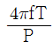
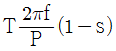
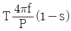
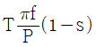
(정답률: 75%)
5. 필라멘트 재료가 갖추어야 할 조건 중 틀린 것은?
- 융해점이 높을 것
- 고유저항이 작을 것
- 선팽창 계수가 적을 것
- 높은 온도에서 증발이 적을 것
(정답률: 84%)
6. 전기철도에서 귀선의 누설전류에 의해 전식은 어디서 발생하는가?
- 궤도로 전류가 유입하는 곳
- 궤도에서 전류가 유출하는 곳
- 지중관로로 전류가 유입하는 곳
- 지중관로에서 전류가 유출하는 곳
(정답률: 71%)
7. 광도가 780 cd인 균등 점광원으로부터 발산하는 전광속(lm)은 약 얼마인가?
- 1892
- 2575
- 4898
- 9801
(정답률: 77%)
8. 아크의 전압과 전류의 관계를 그래프로 나타낸 것으로 맞는 것은?
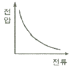
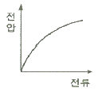
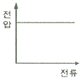
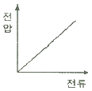
(정답률: 82%)
9. 역 병렬로 된 2개의 SCR과 유사한 양 방향성 3단자 사이리스터로서 AC 전력의 제어에 사용하는 것은?
- SCS
- GTO
- TRIAC
- LASCR
(정답률: 84%)
10. 순금속 발열체의 종류가 아닌 것은?
- 백금(Pt)
- 텅스텐(W)
- 몰리브덴(Mo)
- 탄화규소(SiC)
(정답률: 67%)
11. 3상 농형 유도전동기의 기동방법이 아닌 것은?
- Y-△ 기동
- 전전압 기동
- 2차 저항 기동
- 기동보상기 기동
(정답률: 88%)
12. 옥내에서 전선을 병렬로 사용할 때의 시설방법으로 틀린 것은?
- 전선은 동일한 도체이어야 한다.
- 전선은 동일한 굵기, 동일한 길이이어야 한다.
- 전선의 굵기는 동 40mm2 이상 또는 알루미늄 90 mm2이상이어야 한다.
- 관내에 전류의 불평형이 생기지 아니하도록 시설하여야 한다.
(정답률: 84%)
13. 가교폴리에틸렌(XLPE) 절연물의 최대허용온도(℃)는?
- 70
- 90
- 1⑤
- 120
(정답률: 65%)
14. 전선의 구비조건으로 틀린 것은?
- 비중이 클 것
- 도전율이 클 것
- 내구성이 클 것
- 기계적 강도가 클 것
(정답률: 90%)
15. 합성수지관 상호 간 및 관과 박스 접속 시에 삽입하는 최소 깊이는? (단, 접착제를 사용하는 경우는 제외한다.)
- 관 안지름의 1.2배
- 관 안지름의 1.5배
- 관 바깥지름의 1.2배
- 관 바깥지름의 1.5배
(정답률: 61%)
16. 저압 배전반의 주 차단기로 주로 사용되는 보호기기는?
- GCB
- VCB
- ACB
- OCB
(정답률: 80%)
17. 피뢰설비 중 돌침 지지관의 재료로 적합하지 않은 것은?
- 스테인리스 강관
- 황동관
- 합성수지관
- 알루미늄관
(정답률: 71%)
18. 변압기 철심용 강판의 두께는 대략 몇 mm 인가?
- 0.1
- 0.35
- 2
- 3
(정답률: 68%)
19. 조명용 광원 중에서 연색성이 가장 우수한 것은?
- 백열전구
- 고압나트륨등
- 고압수은등
- 메탈할라이드등
(정답률: 57%)
20. 방전등에 속하지 않는 것은?
- 할로겐등
- 형광수은등
- 고압나트륨등
- 메탈할라이드등
(정답률: 81%)
2과목: 전력공학
21. 옥내배선의 전선 굵기를 결정할대 고려해야 할 사항으로 틀린 것은?
- 허용전류
- 전압강하
- 배선방식
- 기계적강도
(정답률: 32%)
22. 송전선의 특성임피던스와 전파정수는 어떤 시험으로 구할 수 있는가?
- 뇌파시험
- 정격부하시험
- 절연강도 측정시험
- 무부하시험과 단락시험
(정답률: 35%)
23. 유효낙차 100m, 최대사용수량 20m3/s, 수차효율 70%인 수력발전소의 연간 발전전력량은 약 몇 kWh인가? (단, 발전기의 효율은 85% 이라 한다.)
- 2.5×107
- 5×107
- 10×107
- 20×107
(정답률: 24%)
24. 변전소, 발전소 등에 설치하는 피뢰기에 대한 설명 중 틀린 것은?
- 방전전류는 뇌충격전류의 파고값으로 표시한다.
- 피뢰기의 직렬갭은 속류를 차단 및 소호하는 역할을 한다.
- 정격전압은 상용주파수 정현파 전압의 최고 한도를 규정한 순시값이다.
- 속류란 방전현상이 실질적으로 끝난 후에도 전력계통에서 피뢰기에 공급되어 흐르는 전류를 말한다.
(정답률: 27%)
25. 10000 kVA 기준으로 등가 임피던스가 0.4%인 발전소에 설치될 차단기의 차단용량은 몇 MVA 인가?
- 1000
- 1500
- 2000
- 2500
(정답률: 33%)
26. 33 kV 이하의 단거리 송배전선로에 적용되는 비접지 방식에서 지락전류는 다음 중 어느 것을 말하는가?
- 누설전류
- 충전전류
- 뒤진전류
- 단락전류
(정답률: 23%)
27. 단도체 방식과 비교하여 복도체 방식의 송전선로를 설명한 것으로 틀린 것은?
- 선로의 송전용량이 증가된다.
- 계통의 안정도를 증진시킨다.
- 전선의 인덕턴스가 감소하고, 정전용량이 증가된다.
- 전선 표면의 전위경도가 저감되어 코로나 임계전압을 낮출 수 있다.
(정답률: 29%)
28. 고압 배전선로 구성방식 중, 고장 시 자동적으로 고장개소의 분리 및 건전선로에 폐로하여 전력을 공급하는 개폐기를 가지며, 수요 분포에 따라 임의의 분기선으로부터 전력을 공급하는 방식은?
- 환상식
- 망상식
- 뱅킹식
- 가지식(수지식)
(정답률: 20%)
29. 한 대의 주상변압기에 역률(뒤짐) cosθ1, 유효전력 P1(kW) 의 부하와 역률(뒤짐) cosθ2, 유효전력 P2(kW)의 부하가 병렬로 접속되어 있을 때 주상변압기 2차 측에서 본 부하의 종합역률은 어떻게 되는가?
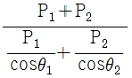
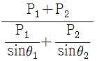
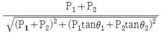
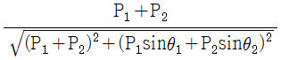
(정답률: 31%)
30. 직류 송전방식에 관한 설명으로 틀린 것은?
- 교류 송전방식보다 안정도가 낮다.
- 직류계통과 연계 운전 시 교류계통의 차단용량은 작아진다.
- 교류 송전방식에 비해 절연계급을 낮출 수 있다.
- 비동기 연계가 가능하다.
(정답률: 32%)
31. 공통 중성선 다중 접지방식의 배전선로에서 Recloser(R), Sectionalizer(S), Line fuse(F)의 보호협조가 가장 적합한 배열은? (단, 보호협조는 변전소를 기준으로 한다.)
- S – F - R
- S – R - F
- F – S - R
- R – S – F
(정답률: 31%)
32. 전력계통 연계 시의 특징으로 틀린 것은?
- 단락전류가 감소한다.
- 경제 급전이 용이하다.
- 공급신뢰도가 향상된다.
- 사고 시 다른 계통으로의 영향이 파급될 수 있다.
(정답률: 30%)
33. 중거리 송전선로의 T형 회로에서 송전단 전류 Is는? (단, Z, Y는 선로의 직렬 임피던스와 병렬 어드미턴스이고, Er은 수전단 전압, Ir은 수전단 전류이다.)
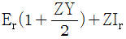
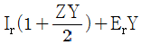
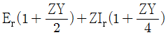
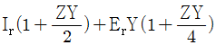
(정답률: 25%)
34. 선택 지락 계전기의 용도를 옳게 설명한 것은?
- 단일 회선에서 지락고장 회선의 선택 차단
- 단일 회선에서 지락전류의 방향 선택 차단
- 병행 2회선에서 지락고장 회선의 선택 차단
- 병행 2회선에서 지락고장의 지속시간 선택 차단
(정답률: 32%)
35. 부하역률이 cosθ인 경우 배전선로의 전력손실은 같은 크기의 부하전력으로 역률이 1인 경우의 전력손실에 비하여 어떻게 되는가?
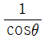
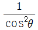
- cosθ
- cos2θ
(정답률: 32%)
36. 터빈(turbine)의 임계속도란?
- 비상조속기를 동작시키는 회전수
- 회전자의 고유 진동수와 일치하는 위험 회전수
- 부하를 급히 차단하였을 때의 순간 최대 회전수
- 부하 차단 후 자동적으로 정정된 회전수
(정답률: 27%)
37. 변전소에서 접지를 하는 목적으로 적절하지 않은 것은?
- 기기의 보호
- 근무자의 안전
- 차단 시 아크의 소호
- 송전시스템의 중성점 접지
(정답률: 26%)
38. 그림과 같은 2기 계통에 있어서 발전기에서 전동기로 전달되는 전력 P는? (단, X = XG + XL + XM 이고 EG, EM은 각각 발전기 및 전동기의 유기기전력, δ는 EG와 EM 간의 상차각이다.)
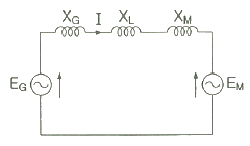
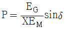
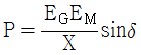
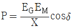
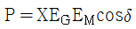
(정답률: 29%)
39. 일반 회로정수가 A, B, C, D 이고 송전단 전압이 ES 인 경우 무부하시 수전단 전압은?
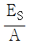
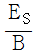
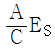
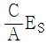
(정답률: 27%)
40. 아킹혼(Arcing Horn)의 설치 목적은?
- 이상전압 소멸
- 전선의 진동방지
- 코로나 손실방지
- 섬락사고에 대한 애자보호
(정답률: 32%)
3과목: 전기기기
41. 스텝각이 2°, 스테핑주파수(pulse rate)가 1800pps 인 스테핑모터의 축속도(rps)는?
- 8
- 10
- 12
- 14
(정답률: 26%)
42. 직류발전기의 외부 특성곡선에서 나타내는 관계로 옳은 것은?
- 계자전류와 단자전압
- 계자전류와 부하전류
- 부하전류와 단자전압
- 부하전류와 유기기전력
(정답률: 27%)
43. 동기전동기가 무부하 운전 중에 부하가 걸리면 동기전동기의 속도는?
- 정지한다.
- 동기속도와 같다.
- 동기속도보다 빨라진다.
- 동기속도 이하로 떨어진다.
(정답률: 21%)
44. 3상 동기발전기의 매극 매상의 슬롯수를 3이라 할 때 분포권 계수는?
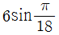
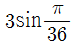
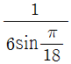
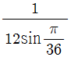
(정답률: 33%)
45. 단상 유도전동기의 토크에 대한 2차 저항을 어느 정도 이상으로 증가시킬 때 나타나는 현상으로 옳은 것은?(문제 오류로 실제 시험에서는 모두 정답처리 되었습니다. 여기서는 1번을 누르면 정답 처리 됩니다.)
- 역회전 가능
- 최대토크 일정
- 기동토크 증가
- 토크는 항상 (+)
(정답률: 31%)
46. 전력용 변압기에서 1차에 정현파 전압을 인가하였을 때, 2차에 정현파 전압이 유기되기 위해서는 1차에 흘러들어가는 여자전류는 기본파 전류 외에 주로 몇 고조파 전류가 포함되는가?
- 제2고조파
- 제3고조파
- 제4고조파
- 제5고조파
(정답률: 30%)
47. 상전압 200V의 3상 반파정류회로의 각 상에 SCR을 사용하여 정류제어 할 때 위상각을 π/6로 하면 순 저항부하에서 얻을 수 있는 직류전압(V)은?
- 90
- 180
- 203
- 234
(정답률: 19%)
48. 동기발전기의 병렬 운전 중 위상차가 생기면 어떤 현상이 발생하는가?
- 무효 횡류가 흐른다.
- 무효 전력이 생긴다.
- 유효 횡류가 흐른다.
- 출력이 요동하고 권선이 가열된다.
(정답률: 25%)
49. 단상 변압기의 병렬운전 시 요구사항으로 틀린 것은?
- 극성이 같을 것
- 정격출력이 같을 것
- 정격전압과 권수비가 같을 것
- 저항과 리액턴스의 비가 같을 것
(정답률: 29%)
50. 100V, 10A, 1500 rpm 인 직류 분권발전기의 정격 시의 계자전류는 2A 이다. 이 때 계자 회로에는 10Ω의 외부저항이 삽입되어 있다. 계자권선의 저항(Ω)은?
- 20
- 40
- 80
- 100
(정답률: 20%)
51. 동기발전기에 회전계자형을 사용하는 경우에 대한 이유로 틀린 것은?
- 기전력의 파형을 개선한다.
- 전기자가 고장자이므로 고압 대전류용에 좋고, 절연하기 쉽다.
- 계자가 회전자지만 저압 소용량의 직류이므로 구조가 간단하다.
- 전기자보다 계자극을 회전자로 하는 것이 기계적으로 튼튼하다.
(정답률: 23%)
52. 변압기의 누설리액턴스를 나타낸 것은? (단, N은 권수이다.)
- N에 비례
- N2에 반비례
- N2에 비례
- N에 반비례
(정답률: 24%)
53. 가정용 재봉틀, 소형공구, 영사기, 치과의료용, 엔진 등에 사용하고 있으며, 교류, 직류 양쪽 모두에 사용되는 만능전동기는?
- 전기 동력계
- 3상 유도전동기
- 차동 복권전동기
- 단상 직권정류자전동기
(정답률: 29%)
54. 50Hz로 설계된 3상 유도전동기를 60Hz에 사용하는 경우 단자전압을 110%로 높일 때 일어나는 현상으로 틀린 것은?
- 철손불변
- 여자전류감소
- 온도상승증가
- 출력이 일정하면 유효전류 감소
(정답률: 22%)
55. 직류기에 관련된 사항으로 잘못 짝 지어진 것은?
- 보극 - 리액턴스 전압 감소
- 보상권선 – 전기자 반작용 감소
- 전기자 반작용 – 직류전동기 속도 감소
- 정류기간 – 전기자 코일이 단락되는 기간
(정답률: 19%)
56. 직류기발전기에서 양호한 정류(整流)를 얻는 조건으로 틀린 것은?
- 정류주기를 크게 할 것
- 리액턴스 전압을 크게 할 것
- 브러시의 접촉저항을 크게 할 것
- 전기자 코일의 인덕턴스를 작게 할 것
(정답률: 23%)
57. 그림은 전원전압 및 주파수가 일정할 때의 다상 유도전동기의 특성을 표시하는 곡선이다. 1차 전류를 나타내는 곡선은 몇 번 곡선인가?
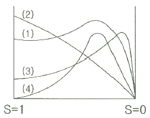
- (1)
- (2)
- (3)
- (4)
(정답률: 27%)
58. 정격전압 220V, 무부하 단자전압 230V, 정격출력이 40kW인 직류 분권발전기의 계자저항이 22Ω, 전기자 반작용에 의한 전압강하가 5V라면 전기자 회로의 저항(Ω)은 약 얼마인가?
- 0.026
- 0.028
- 0.035
- 0.042
(정답률: 17%)
59. 변압기에서 사용되는 변압기유의 구비조건으로 틀린 것은?
- 점도가 높을 것
- 응고점이 낮을 것
- 인화점이 높을 것
- 절연 내력이 클 것
(정답률: 33%)
60. 유도전동기로 동기전동기를 기동하는 경우, 유도전동기의 극수는 동기전동기의 극수보다 2극 적은 것을 사용하는 이유로 옳은 것은? (단, s는 슬립이며 NS는 동기속도이다.)
- 같은 극수의 유도전동기는 동기속도바다 sNS만큼 늦으므로
- 같은 극수의 유도전동기는 동기속도바다 sNS만큼 빠르므로
- 같은 극수의 유도전동기는 동기속도바다 (1-s)NS만큼 늦으므로
- 같은 극수의 유도전동기는 동기속도바다 (1-s)NS만큼 빠르므로
(정답률: 26%)
4과목: 회로이론 및 제어공학
61. 어떤 콘덴서를 300V로 충전하는데 9J의 에너지가 필요하였다. 이 콘덴서의 정전용량은 몇 μF인가?
- 100
- 200
- 300
- 400
(정답률: 25%)
62. 1km당 인덕턴스 25 mH, 정전용량 0.0⑤ μF의 선로가 있다. 무손실 선로라고 가정한 경우 진행파의 위상(전파) 속도는 약 몇 km/s 인가?
- 8.95 × 104
- 9.95 × 104
- 89.5 × 104
- 99.5 × 104
(정답률: 27%)
63. 길이에 따라 비례하는 저항 값을 가진 어떤 전열선에 E0(V)의 전압을 인가하면 P0(W)의 전력이 소비된다. 이 전열선을 잘라 원래 길이의 2/3로 만들고 E(V)의 전압을 가한다면 소비전력 P(W)는?
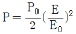
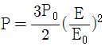
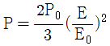
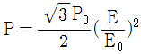
(정답률: 23%)
64. 회로에서 4단자 정수 A, B, C, D 의 값은?
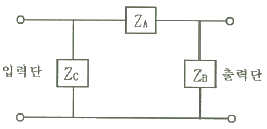
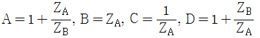
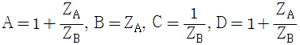
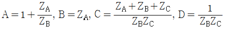
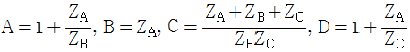
(정답률: 29%)
65. 그림과 같은 RC 저역통과 필터회로에 단위 임펄스를 입력으로 가했을 때 응답 h(t)는?
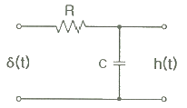
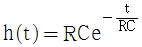
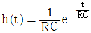
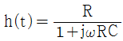
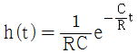
(정답률: 25%)
66. f(t) = ejωt의 라플라스 변환은?
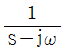
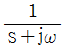
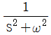
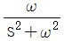
(정답률: 26%)
67. 평형 3상 3선식 회로에서 부하는 Y결선이고, 선간전압이 173.2∠0°(V) 일 때 선전류는 20∠-120°(A)이었다면, Y결선된 부하 한상의 임피던스는 약 몇 Ω 인가?
- 5∠60°
- 5∠90°
- 5√3∠60°
- 5√3∠90°
(정답률: 20%)
68. 전류 I=30sinωt+40sin(3ωt+45°)(A)의 실효값(A)은?
- 25
- 25√2
- 50
- 50√2
(정답률: 24%)
69. 2전력계법으로 평형 3상 전력을 측정하였더니 한 쪽의 지시가 500W, 다른 한 쪽의 지시가 1500W 이었다. 피상전력은 약 몇 VA인가?
- 2000
- 2310
- 2646
- 2771
(정답률: 26%)
70. 그림과 같은 순 저항회로에서 대칭 3상 전압을 가할 때 각 선에 흐르는 전류가 같으려면 R의 값은 몇 Ω 인가?
- 8
- 12
- 16
- 20
(정답률: 24%)
71. 폐루프 전달함수 의 극의 위치를 개루프 전달함수 G(s)H(s)의 이득상수 K의 함수로 나타내는 기법은?
- 근궤적법
- 보드 선도법
- 이득 선도법
- Nyguist 판정법
(정답률: 25%)
72. 다음 회로망에서 입력전압을 V1(t), 출력전압을 V2(t)라 할 때, 에 대한 고유주파수 ωn과 제동비 ζ의 값은? (단, R = 100Ω, L = 2H, C = 200μF 이고, 모든 초기전하는 0 이다.)
- ωn = 50, ζ = 0.5
- ωn = 50, ζ = 0.7
- ωn = 250, ζ = 0.5
- ωn = 250, ζ = 0.7
(정답률: 25%)
73. 단위 궤환제어계의 개루프 전달함수가 일 때, K가 -∞로부터 +∞까지 변하는 경우 특성방정식의 근에 대한 설명으로 틀린 것은?
- -∞ ＜ K ＜ 0 에 대하여 근을 모두 실그이다.
- 0 ＜ K ＜ 1에 대하여 2개의 근을 모두 음의 실근이다.
- K = 0에 다하여 s1 = 0, s2 = -2 의 근은 G(s)의 극점과 일치한다.
- 1 ＜ K ＜ ∞ 에 대하여 2개의 근은 음의 실수부 중근이다.
(정답률: 19%)
74. 2차계 과도응답에 대한 특성 방정식의 근은 s1, 이다. 감쇠비 ζ가 0 ＜ ζ ＜ 1 사이에 존재할 때 나타나는 현상은?
- 과제동
- 무제동
- 부족제동
- 임계제동
(정답률: 26%)
75. 다음 중 이진 값 신호가 아닌 것은?
- 디지털 신호
- 아날로그 신호
- 스위치의 On-Off 신호
- 반도체 소자의 동작, 부동작 상태
(정답률: 31%)
76. 다음의 블록선도에서 특성방정식의 근은?
- -2, -5
- 2, 5
- -3, -4
- 3, 4
(정답률: 26%)
77. 다음 신호 흐름선도의 일반식은?
(정답률: 31%)
78. 보드 선도에서 이득여유에 대한 정보를 얻을 수 있는 것은?
- 위상곡선 0°에서의 이득과 0dB과의 차이
- 위상곡선 180°에서의 이득과 0dB과의 차이
- 위상곡선 -90°에서의 이득과 0dB과의 차이
- 위상곡선 -180°에서의 이득과 0dB과의 차이
(정답률: 29%)
79. 블록선도 변환이 틀린 것은?
(정답률: 25%)
80. 그림의 시퀀스 회로에서 전자접촉기 X에 의한 A접점(Normal open contact)의 사용 목적은?
- 자기유지회로
- 지연회로
- 우선 선택회로
- 인터록(interlock)회로
(정답률: 30%)
5과목: 전기설비기술기준 및 판단기준
81. 전로에 시설하는 고압용 기계기구의 철대 및 금속제 외함에는 제 몇 종 접지공사를 하여야 하는가?(관련 규정 개정전 문제로 여기서는 기존 정답인 1번을 누르면 정답 처리됩니다. 자세한 내용은 해설을 참고하세요.)
- 제1종 접지공사
- 제2종 접지공사
- 제3종 접지공사
- 특별 제3종 접지공사
(정답률: 20%)
82. 저압 옥상전선로의 시설에 대한 설명으로 틀린 것은?
- 전선은 절연전선을 사용한다.
- 전선은 지름 2.6mm 이상의 경동선을 사용한다.
- 전선은 상시 부는 바람 등에 의하여 식물에 접촉하지 않도록 시설한다.
- 전선과 옥상 전선로를 시설하는 조영재와의 이격거리를 0.5m 로 한다.
(정답률: 30%)
83. 440V용 전동기의 외함을 접지할 때 접지저항값은 몇 Ω 이하로 유지하여야 하는가?
- 10
- 20
- 30
- 100
(정답률: 21%)
84. 가공전선로의 지지물에 취급자가 오르고 내리는데 사용하는 발판 볼트 등은 지표상 몇 m 미만에 시설하여서는 아니 되는가?
- 1.2
- 1.8
- 2.2
- 2.5
(정답률: 32%)
85. 무선용 안테나 등을 지지하는 철탑의 기초 안전율은 얼마 이상이어야 하는가?
- 1.0
- 1.5
- 2.0
- 2.5
(정답률: 20%)
86. 저압 옥내배선의 사용전압이 400V 미만인 경우 버스덕트 공사는 몇 종 접지공사를 하여야 하는가?(관련 규정 개정전 문제로 여기서는 기존 정답인 3번을 누르면 정답 처리됩니다. 자세한 내용은 해설을 참고하세요.)
- 제1종 접지공사
- 제2종 접지공사
- 제3종 접지공사
- 특별 제3종 접지공사
(정답률: 25%)
87. 차량 기타 중량물의 압력을 받을 우려가 있는 장소에 지중 전선로를 직접 매설식으로 시설하는 경우 매설깊이는 몇 m 이상이어야 하는가?(2021년 변경된 KEC 규정 적용)
- 0.6
- 1.0
- 1.2
- 1.5
(정답률: 27%)
88. 고압용 기계기구를 시설하여서는 안 되는 경우는?
- 시가지 외로서 지표상 3m 인 경우
- 발전소, 변전소, 개폐소 또는 이에 준하는 곳에 시설하는 경우
- 옥내에 설치한 기계기구를 취급자 이외의 사람이 출입할 수 없도록 설치한 곳에 시설하는 경우
- 공장 등의 구내에서 기계기구의 주위에 사람이 쉽게 접촉할 우려가 없도록 적당한 울타리를 설치하는 경우
(정답률: 25%)
89. 특고압 가공전선로의 지지물로 사용하는 B종 철주에서 각도형은 전선로 중 몇 도를 넘는 수평 각도를 이루는 곳에 사용되는가?
- 1
- 2
- 3
- 5
(정답률: 28%)
90. 저압전로에서 그 전로에 지락이 생겼을 경우에 0.5초 이내에 자동적으로 전로를 차단하는 장치를 시설 시 자동차단기의 정격감도전류가 100mA 이며 제 3종 접지공사의 접지저항 값은 몇 Ω 이하로 하여야 하는가? (단, 전기적 위험도가 높은 장소인 경우이다.)
- 50
- 100
- 150
- 200
(정답률: 18%)
91. 가공 직류 전차선의 레일면상의 높이는 일반적인 경우 몇 m 이상이어야 하는가?
- 4.3
- 4.8
- 5.2
- 5.8
(정답률: 25%)
92. 빙설의 정도에 따라 풍압하중을 적용하도록 규정하고 있는 내용 중 옳은 것은? (단, 빙설이 많은 지방 중 해안지방 기타 저온계절에 최대풍압이 생기는 지방은 제외한다.)
- 빙설이 많은 지방에서는 고온계절에는 갑종 풍압하중, 저온계절에는 을종 풍압하중을 적용한다.
- 빙설이 많은 지방에서는 고온계절에는 을종 풍압하중, 저온계절에는 갑종 풍압하중을 적용한다.
- 빙설이 적은 지방에서는 고온계절에는 갑종 풍압하중, 저온계절에는 을종 풍압하중을 적용한다.
- 빙설이 적은 지방에서는 고온계절에는 을종 풍압하중, 저온계절에는 갑종 풍압하중을 적용한다.
(정답률: 24%)
93. 고압 가공전선로에 사용하는 가공지선으로 나경동선을 사용할 때의 최소 굵기(mm)는?
- 3.2
- 3.5
- 4.0
- 5.0
(정답률: 27%)
94. 특고압용 변압기의 보호장치인 냉각장치에 고장이 생긴 경우 변압기의 온도가 현저하게 상승한 경우에 이를 경보하는 장치를 반드시 하지 않아도 되는 경우는?
- 유입 풍냉식
- 유입 자냉식
- 송유 풍냉식
- 송유 수냉식
(정답률: 27%)
95. 가공전선로의 지지물에 시설하는 지선의 시설 기준으로 옳은 것은?
- 지선의 안전율은 2.2 이상이어야 한다.
- 연선을 사용할 경우에는 소선(素線) 3가닥 이상이어야 한다.
- 도로를 횡단하여 시설하는 지선의 높이는 지표상 4m 이상으로 하여야 한다.
- 지중부분 및 지표상 20cm 까지의 부분에는 내식성이 있는 것 또는 아연도금을 한다.
(정답률: 29%)
96. 전기집진장치에 특고압을 공급하기 위한 전기설비로서 변압기로부터 정류기에 이르는 케이블을 넣는 방호장치의 금속제 부분에 사람이 접촉할 우려가 없도록 시설하는 경우 제 몇 종 접지공사로 할 수 있는가?(관련 규정 개정전 문제로 여기서는 기존 정답인 3번을 누르면 정답 처리됩니다. 자세한 내용은 해설을 참고하세요.)
- 제1종 접지공사
- 제2종 접지공사
- 제3종 접지공사
- 특별 제3종 접지공사
(정답률: 21%)
97. 조상설비의 조상기(趙尙基) 내부에 고장이 생긴 경우에 자동적으로 전로로부터 차단하는 장치를 시설해야 하는 뱅크용량(kVA)으로 옳은 것은?
- 1000
- 1500
- 10000
- 15000
(정답률: 26%)
98. 옥내에 시설하는 전동기가 소손되는 것을 방지하기 위한 과부하 보호 장치를 하지 않아도 되는 것은?
- 정격 출력이 7.5kW 이상인 경우
- 정격 출력이 0.2kW 이하인 경우
- 정격 출력이 2.5kW 이며, 과전류 차단기가 없는 경우
- 전동기 출력이 4kW 이며, 취급자가 감시할 수 없는 경우
(정답률: 31%)
99. 어떤 공장에서 케이블을 사용하는 사용전압이 22kV인 가공전선을 건물 옆쪽에서 1차 접근상태로 시설하는 경우, 케이블과 건물의 조영재 이격거리는 몇 cm 이상이어야 하는가?
- 50
- 80
- 100
- 120
(정답률: 15%)
100. 사용전압 66kV의 가공전선로를 시가지에 시설할 경우 전선의 지표상 최소 높이는 몇 m 인가?
- 6.48
- 8.36
- 10.48
- 12.36
(정답률: 23%)